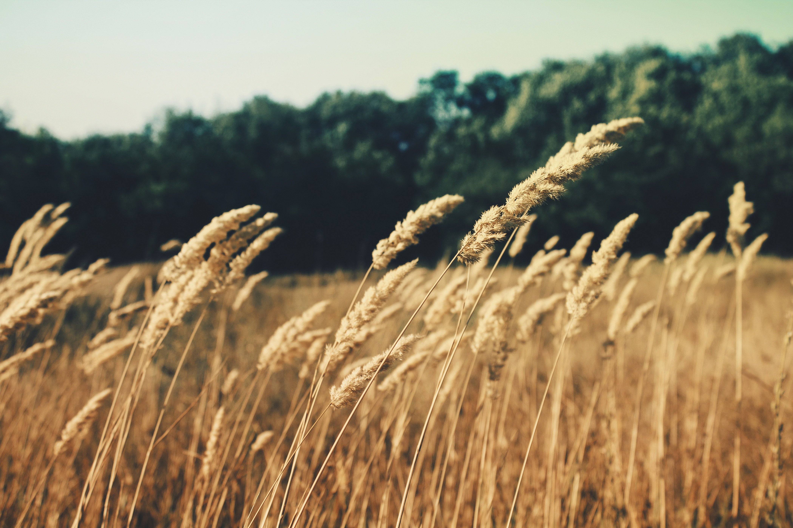
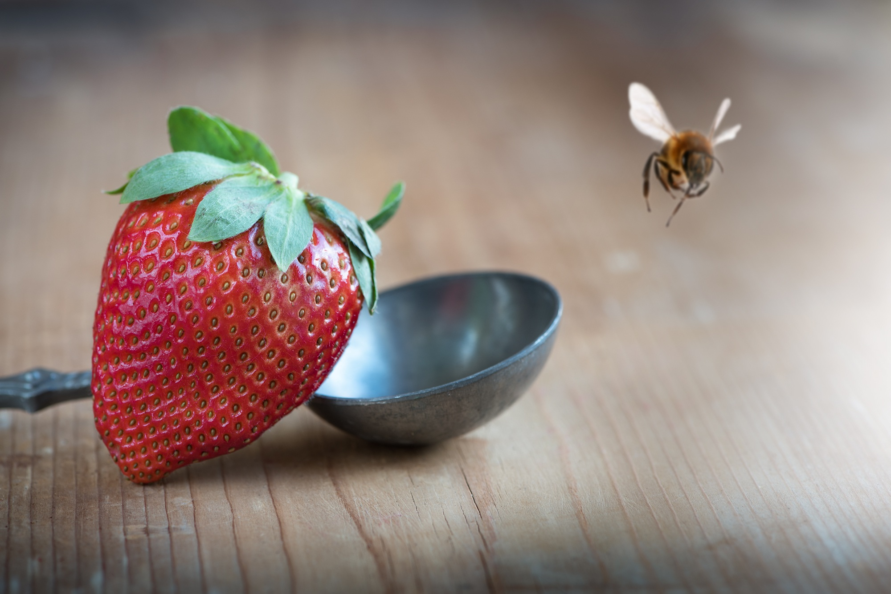
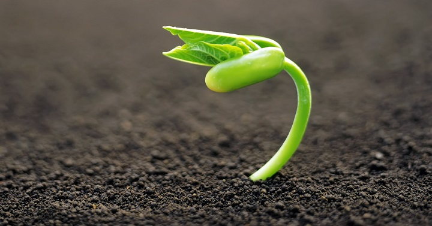
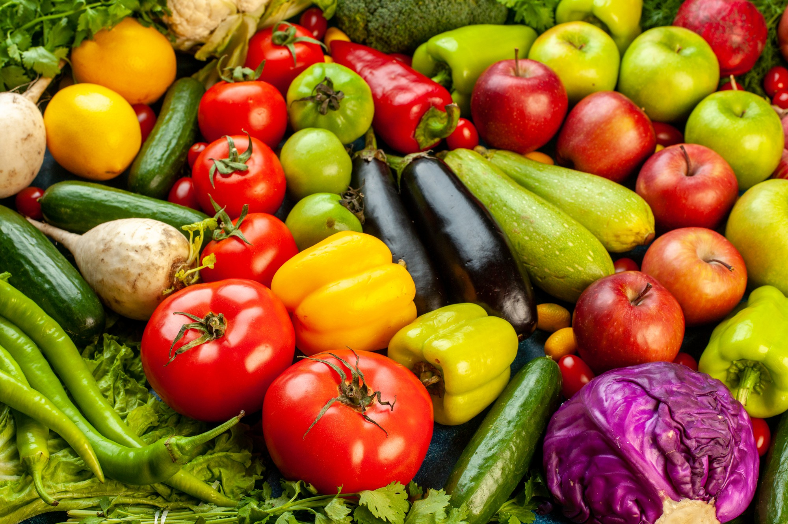
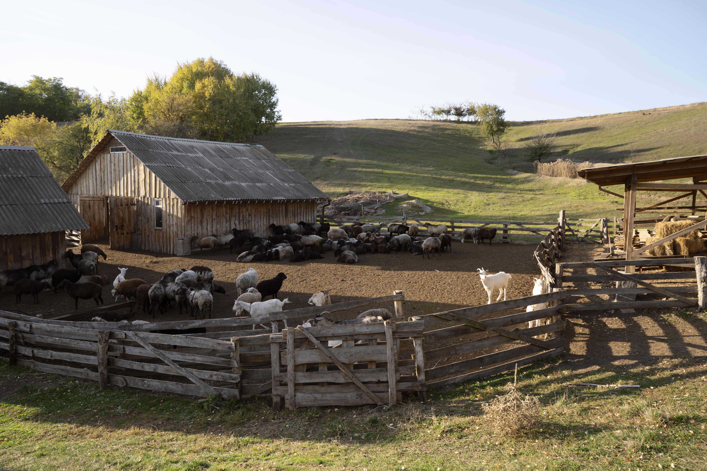
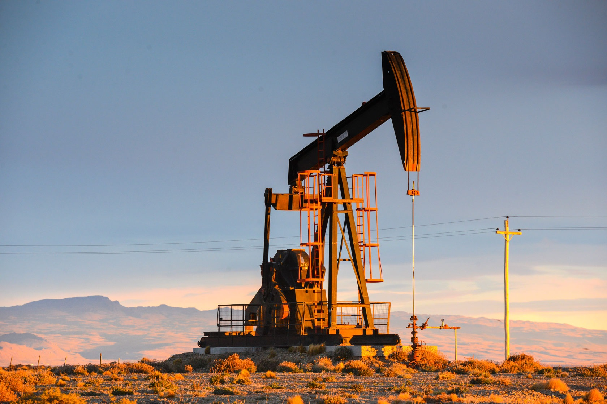
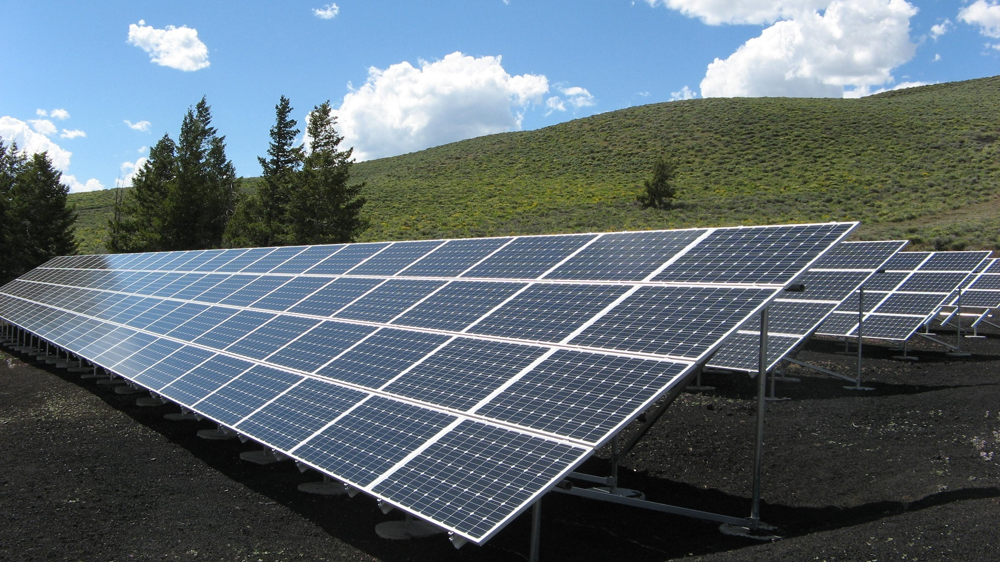
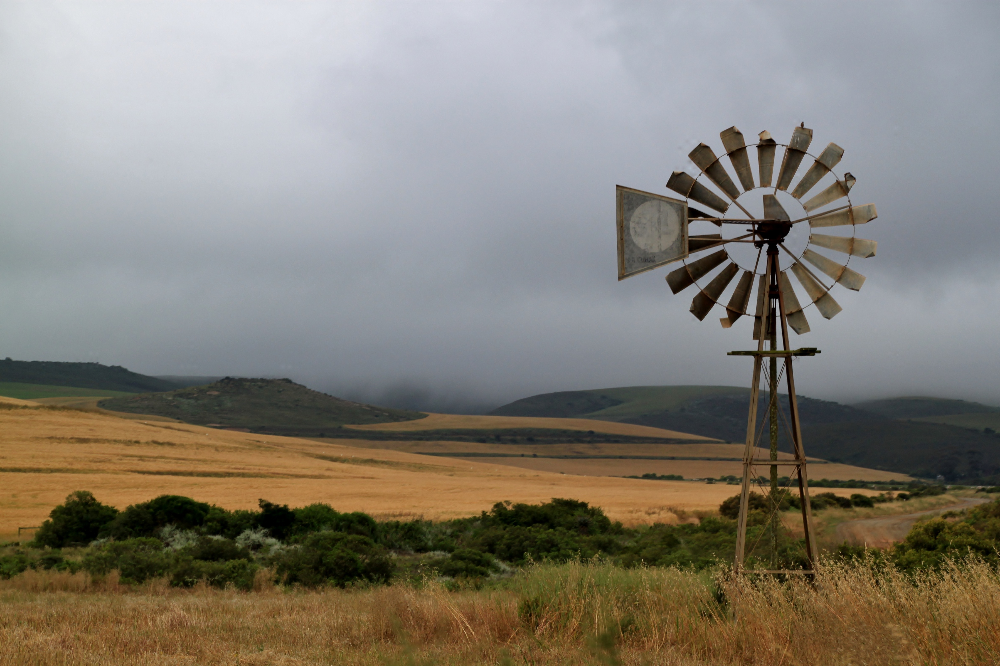
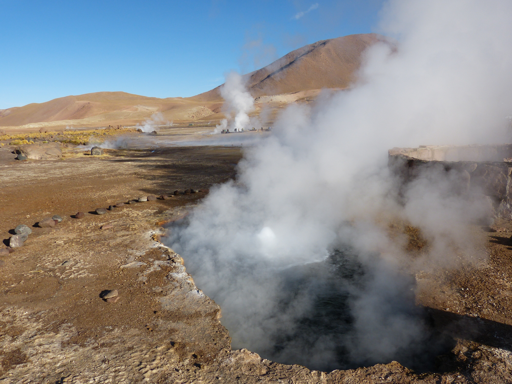
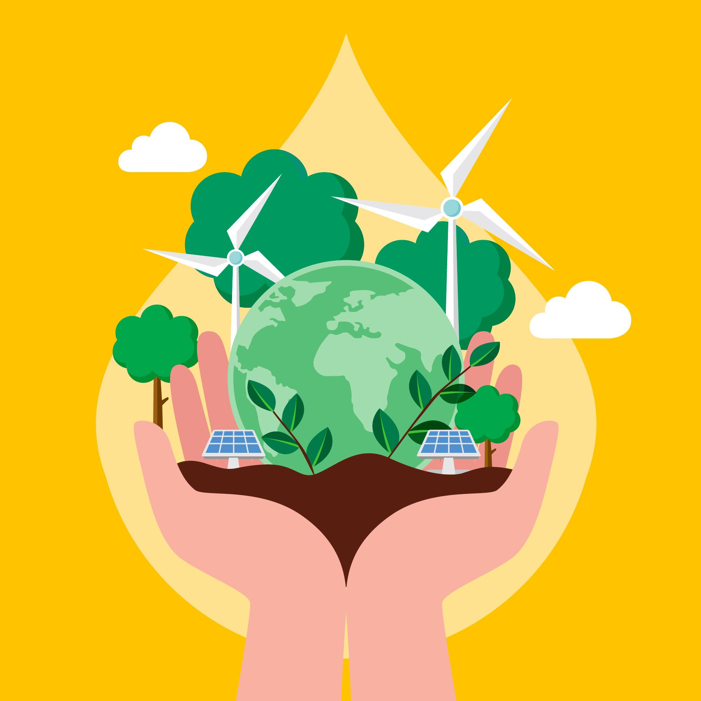

A los recursos naturales los podemos clasificar de 2 formas , segun su origen o función:
Forma Directa. Materiales
Son aquellas materias primas, los minerales y los alimentos



Forma indirecta- servicios
Son los servicios ecológicos que son indispensables para la continuidad de la vida en el planeta.
Por ejemplo: la capacitación de filtración de agua y la mitigación de los efectos del cambio climático.
Se pueden clasificar los recursos naturales en 3 categorias:
Los recursos Renovables
Son aquellos que como su nombre lo indica se renuevan a sí mismos haciéndolos aprovechables
casi sin riesgo de que se acaben en un largo plazo, pueden contribuir en la forma de energía o de materia.
El ser humano tiene la capacidad de aprovecharlos para producir servicios que hagan de su vida más fácil y cómoda.
Por ejemplo: Las plantas, el suelo, la atmósfera, los animales, el papel y los hongos son algunos de los ejemplos
de los recursos renovables



Los recursos NO renovables
Son aquellos como su nombre lo especifica no son capaces de renovarse naturalmente a sí mismos.
Estos recursos naturales tienen como característica fundamental que tienden a agotarse, pueden llegar a desaparecer y por
ello es que deben ser administrados con un criterio de escasez, incluso si son momentáneamente abundantes, como pueden ser
los minerales, los hidrocarburos, el carbón mineral hasta el petróleo ya que cuando un yacimiento se acaba no puede regenerarse.


Los recursos inagotables
Son aquellos recursos que prácticamente son imposibles que se agoten y entre ellos se encuentan
la energia geotermica, la energia solar, el viento, y las mareas.



Lo más relevante e importante en cuanto a los recursos naturales es que son limitados y son interdependientes ..
¿Qué significa esto? que los mismos tienen relación entre si, y es necesario tener un equilibrio en cuanto a su explotación
y su administración para no llegar al punto de perder esa renovación con los mismos.
Los individuos y las empresas que son encargados de la producción y distribución, deben lograr utilizar los mismos de forma consciente.

¿Cuáles son los objetivos de política ambiental en Nuestro País?
- Asegurar la calidad de los recursos ambientales.
- Mejorar la calidad de vida de las generaciones presentes y futuras.
- Fomentar la participación social en materia ambiental.
- Promover el uso racional y sustentable de los recursos naturales.
- Mantener el equilibrio de los sistemas ecológicos.
- Asegurar la conservación de la diversidad biológica.
- Prevenir los efectos peligrosos que el hombre genera sobre el ambiente.
- Promover cambios de conductas a través de la educación ambiental.
- Organizar la información ambiental y asegurar el libre acceso a la misma.
- Establecer un sistema federal para implementar políticas ambientales.
- Establecer procedimientos para minimizar y prevenir riesgos y emergencias ambientales y recomponer los daños causados por la contaminación ambiental.
Podés encontrar mas información en :
Página Argentina sobre Leyes de Política Ambiental
La tierra proporciona lo suficiente para satisfacer las necesidades de cada hombre, pero no la codicia de cada hombre - Gandhi